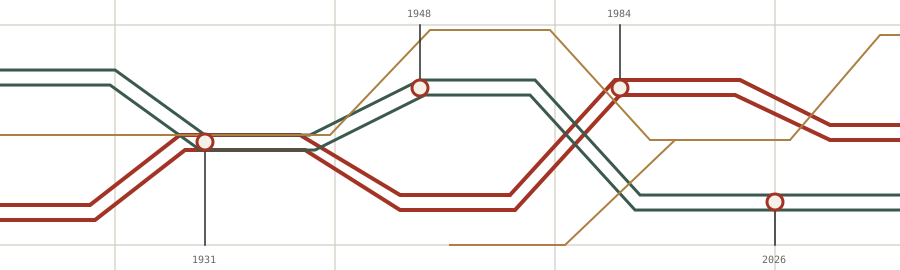

HISTORIA · COSTA RICAEDICIÓN DIGITAL / 01
1931 — 2026
Comunismo
a la tica
Organización popular, reforma social y transformaciones de las izquierdas.

Un libro de josoroma + AI Corpus
Comenzar a leer ↗16 capítulos · @@WORDS@@ palabras en los capítulos · Fuentes y notas abiertas a revisión
Alcance histórico hasta el 6 de noviembre de 2026